Statistical Distributions
Types of data
Nominal Data

Ordinal Data

Discrete Data
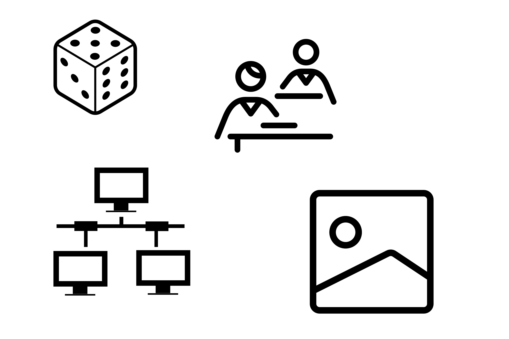
Continous Data

The Normal Distribution
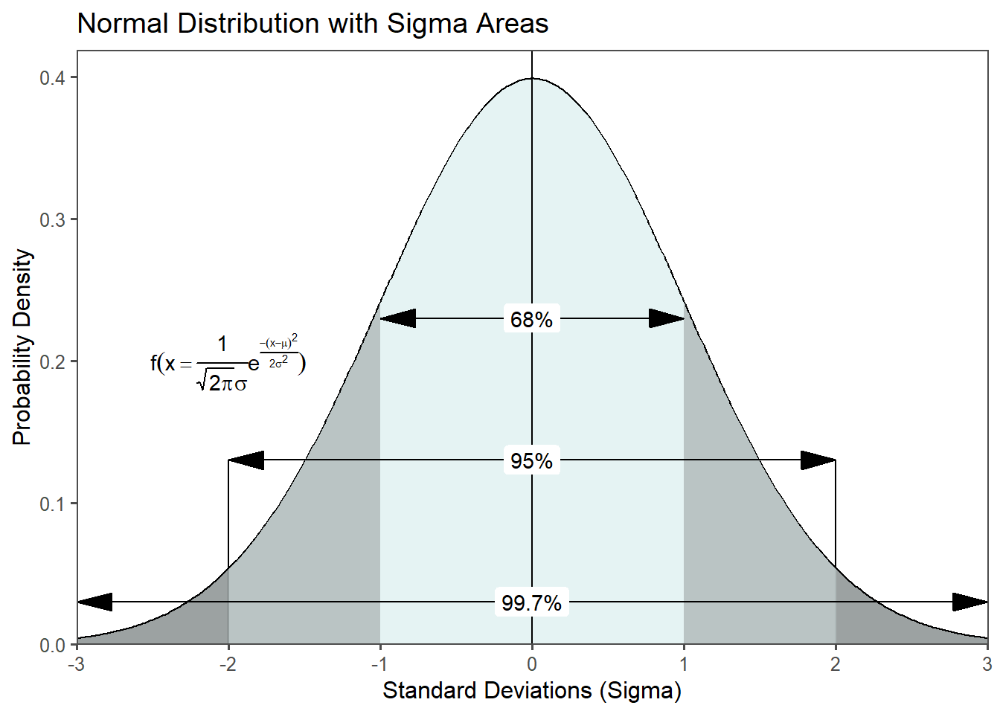
Emergence


The math behind
\[P(k) = \binom{n}{k}\cdot{\frac{1}{2}}^n\]
| \(k\) | \(n!\) | \(k!\) | \((n-k)!\) | \(\binom{n}{k} = \binom{6}{k}\) | \(P(k) = \binom{6}{k}\cdot{\frac{1}{2}}^{n=6}\) |
|---|---|---|---|---|---|
| \(0\) | \(720\) | \(1\) | \((6-0)! = 6! = 720\) | \(\frac{720}{1 \cdot 720} = 1\) | \(P(0) = 1 \cdot \frac{1}{64} = 0.015624\) |
| \(1\) | \(720\) | \(1\) | \((6-1)! = 5! = 120\) | \(\frac{720}{1 \cdot 120} = 6\) | \(P(1) = 6 \cdot \frac{1}{64} = 0.093750\) |
| \(2\) | \(720\) | \(2\) | \((6-2)! = 4! = 24\) | \(\frac{720}{2 \cdot 24} = 15\) | \(P(2) = 15 \cdot \frac{1}{64} = 0.234375\) |
| \(3\) | \(720\) | \(6\) | \((6-3)! = 3! = 6\) | \(\frac{720}{6 \cdot 6} = 20\) | \(P(3) = 20 \cdot \frac{1}{64} = 0.312500\) |
| \(4\) | \(720\) | \(24\) | \((6-4)! = 2! = 2\) | \(\frac{720}{24 \cdot 2} = 15\) | \(P(2) = 15 \cdot \frac{1}{64} = 0.234375\) |
| \(5\) | \(720\) | \(120\) | \((6-5)! = 1! = 1\) | \(\frac{720}{120 \cdot 1} = 6\) | \(P(5) = 6 \cdot \frac{1}{64} = 0.093750\) |
| \(6\) | \(720\) | \(720\) | \((6-6)! = 0! = 1\) | \(\frac{720}{720 \cdot 1} = 1\) | \(P(6) = 1 \cdot \frac{1}{64} = 0.015624\) |
Mean and Standard Deviation from the Galton board
- What is the expected value?
\[\mu = E[X] = np\] \[p = 0.5 \rightarrow \mu = n \times 0.5 = \frac{1}{2}n\]
On average a ball will land in \(k=\frac{n}{2}\)
- What is the spread
\[\sigma = \sqrt{np(1-p)}\] \(Var(X) = E[(X-\mu)^2]\) (Variance in general)
\(Var(X) = np(1-p)\) (number of right moves)
Understanding spread
\[\sigma^2=np(1-p)\]
- Every step is independent, for a single step (\(p=0.5\)):
\[Var(X) = p(1-p)\]
- Therefore for \(n\) steps:
\[Var(X) = np(1-p) \rightarrow \sigma = \frac{\sqrt{n}}{2}\]
- For \(n = 100\)
\(\sigma = \frac{\sqrt{100}}{2}\) so most balls will land between \(45\) and \(55\)
Z - Standardization
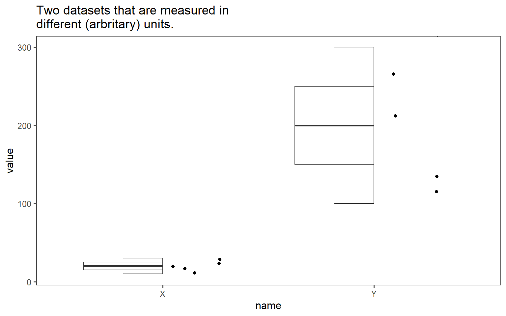
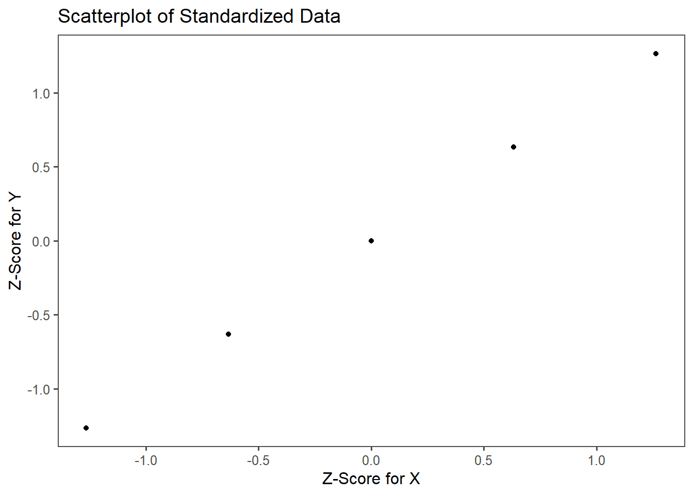
The drive shaft exercise - Z-Standardization
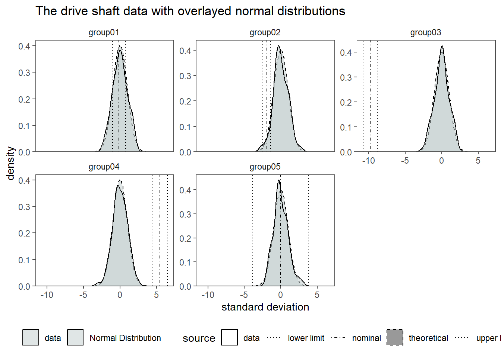
Central Limit Theorem (CLT)
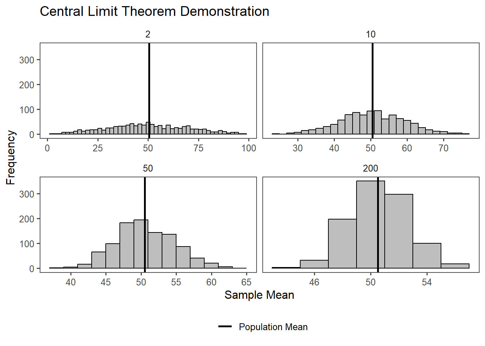
Law of Large Numbers
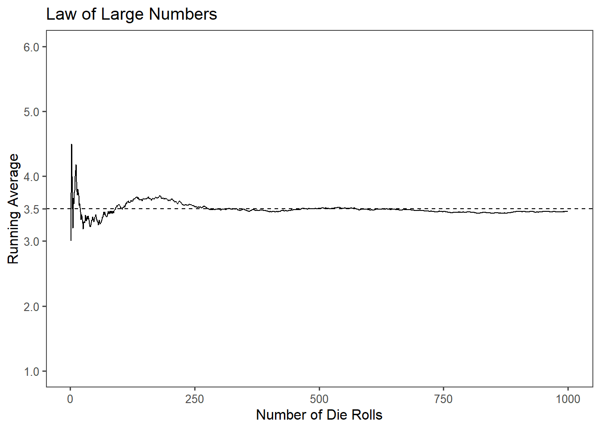
The Z-transform and the Galton Board
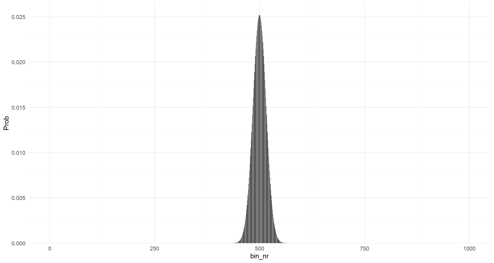
Applying the Z-transform
\[Z = \frac{X-\mu}{\sigma}\]
\[Z = \frac{X-\frac{n}{2}}{\frac{\sqrt{n}}{2}}\]
\[\lim_{n\to\infty} P(a\leq Z \leq b)= \int_a^b \frac{1}{\sqrt{2\pi}}e^\frac{-z^2}{2} \,dz \]
Converting the bionmial Formula to a Normal Form
Stirling appoximation: \(n!\approx\sqrt{2\pi n} \left( \frac{n}{e} \right)^n\)
Appprox: \(\binom{n}{k} \approx \frac{\sqrt{2\pi n} \left( \frac{n}{e} \right)^n}{\sqrt{2\pi n} \left( \frac{k}{e} \right)^k \cdot \sqrt{2\pi(n-k)} \left( \frac{n-k}{e} \right)^{n-k}}\)
simplifies to: \(\binom{n}{k} = \frac{1}{\sqrt{2\pi n p (1-p)}}e^{-\frac{(k-np)^2}{2np(1-p)}}\)
substituting \(p=0.5\): \(P(X = k) \approx \frac{1}{\sigma\sqrt{2\pi}}e^{-\frac{(k-\mu)^2}{2\sigma^2}}\)
Which is the Probability Density Function
The drive shaft exercise - Normal Distribution
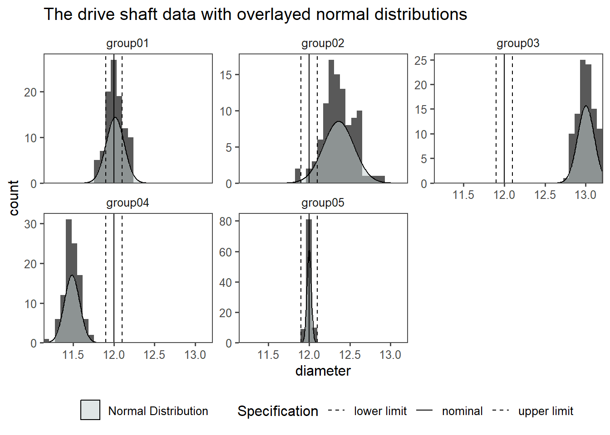
Probability Density Function (PDF)
Cumulative Density Function (CDF)
Likelihood and Probability
Chi2 - Distribution
The drive shaft exercise - Chi2 Distribution
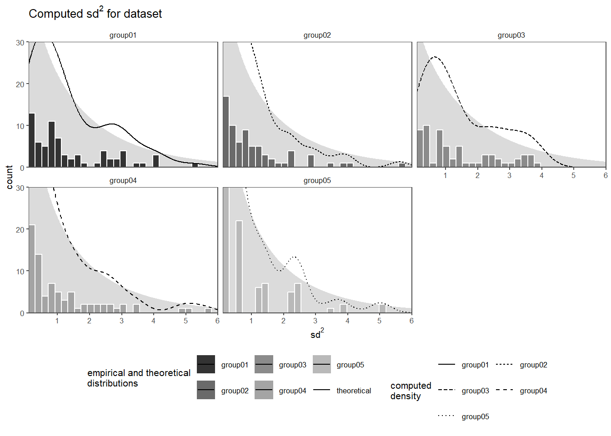
t - Distribution
The drive shaft exercise - t-Distribution
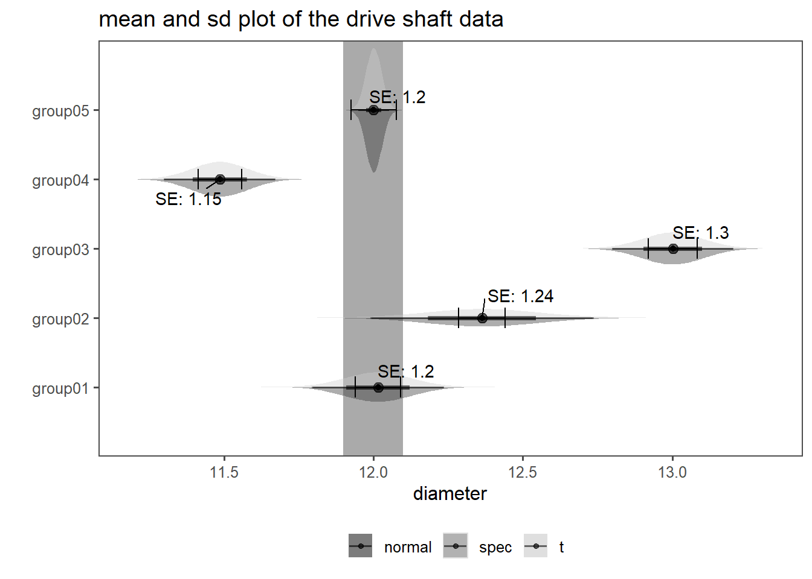

F - Statistics
Interconnections
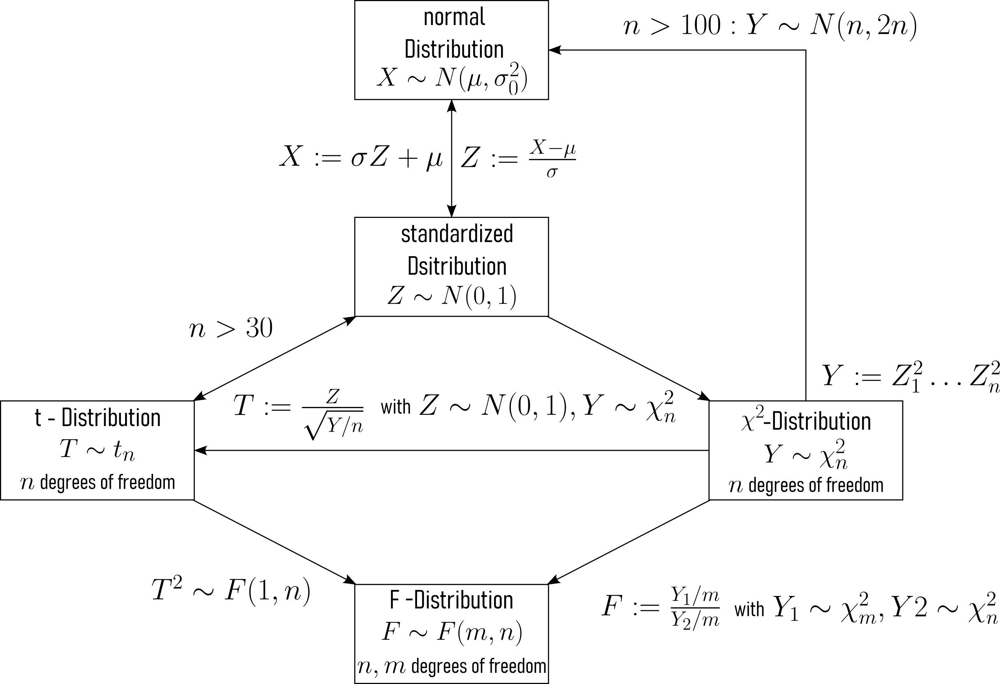
Bionmimal Distribution
Probability Mass Function (PMF)
The drive shaft exercise - Binomial Distribution
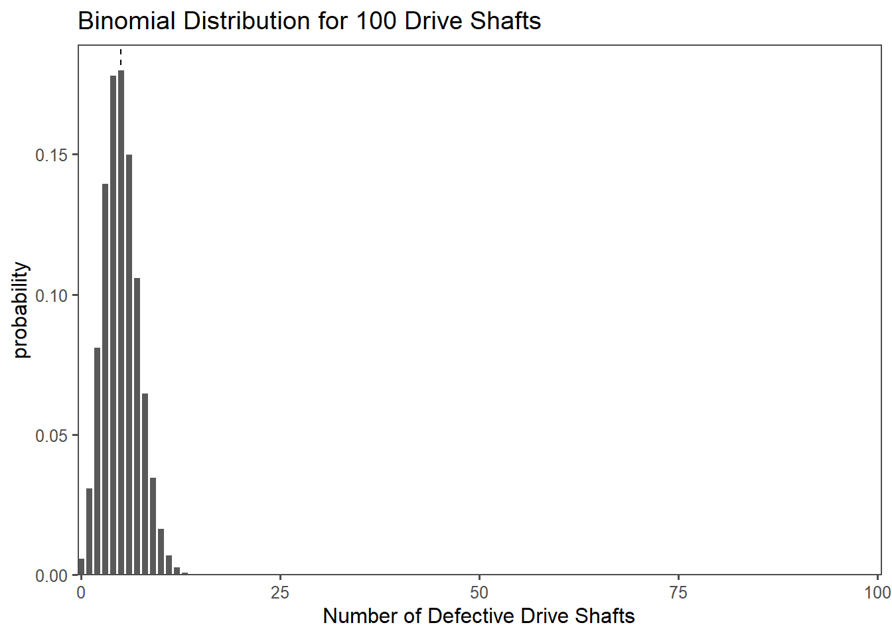
Weibull - Distribution
The drive shaft exercise - Weibull distribution
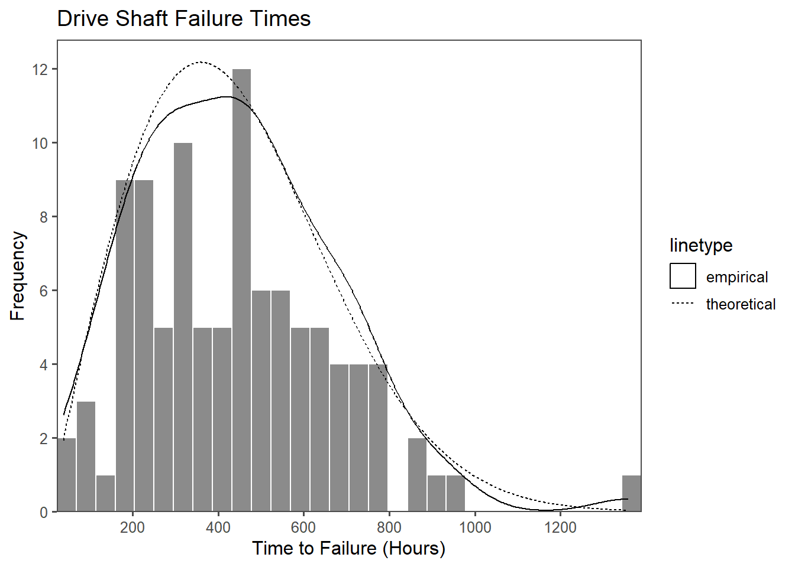
Poisson - Distribution
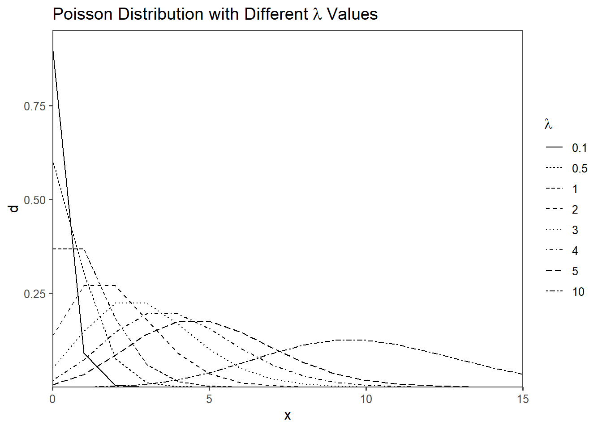
Gamma - Distribution
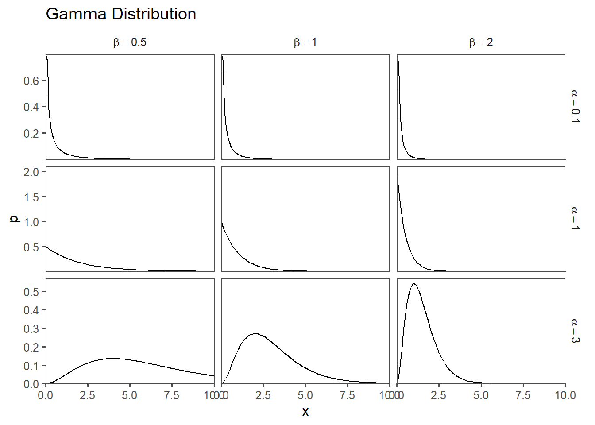